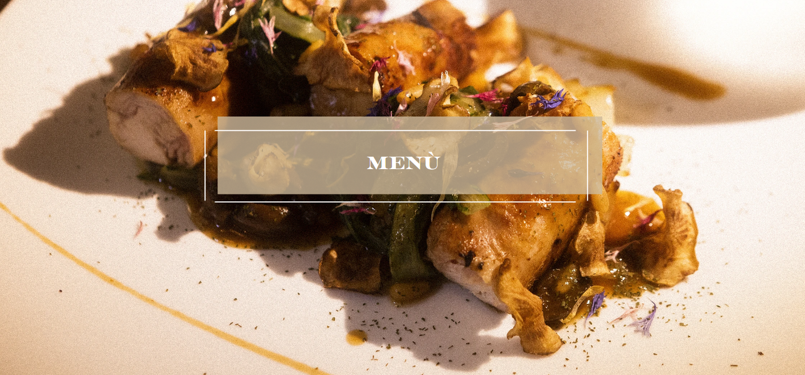

Entradas
Bruschetta al Pomodoro
Pão rústico torrado com tomate fresco, alho, manjericão e azeite de oliva extra virgem.
R$ 22,00 · 2 unidadesCaprese
Fatias de muçarela de búfala, tomate italiano e folhas de manjericão com redução de balsâmico.
R$ 26,00 · Serve 1 pessoaArancini
Bolinhos crocantes de risoto recheados com queijo e molho de tomate artesanal.
R$ 24,00 · 3 unidadesFocaccia com Alecrim
Pão italiano macio com azeite, flor de sal e alecrim fresco.
R$ 18,00 · Serve 2 pessoasCarpaccio di Manzo
Finas fatias de carne bovina curada com rúcula, lascas de parmesão e molho de alcaparras.
R$ 34,00 · Serve 1 pessoaOlivas Marinadas
Mistura de azeitonas verdes e pretas temperadas com alho, limão e ervas mediterrâneas.
R$ 16,00 · Porção individualPratos Principais
Risotto alla Milanese
Risoto cremoso feito com açafrão e parmesão, finalizado com manteiga e vinho branco.
R$ 49,00 · Serve 1 pessoaSpaghetti alla Carbonara
Espaguete com molho à base de ovos, queijo pecorino, pancetta e pimenta-do-reino.
R$ 44,50 · Serve 1 pessoaPollo alla Cacciatora
Frango cozido lentamente com tomates, azeitonas, alho, cebola e ervas aromáticas.
R$ 52,00 · Serve 1 pessoaGnocchi al Pesto Genovese
Tradicional nhoque de batata servido com molho pesto de manjericão, pinoli e parmesão.
R$ 41,90 · Serve 1 pessoaLinguine ai Frutti di Mare
Massas longas com frutos do mar frescos, alho, azeite de oliva e vinho branco.
R$ 58,00 · Serve 1 pessoaMelanzane alla Parmigiana
Berinjelas assadas em camadas com molho de tomate, manjericão e queijo gratinado.
R$ 39,00 · Serve 1 pessoaSobremesas
Tiramisù
Camadas de biscoito embebido em café, creme de mascarpone e cacau em pó.
R$ 24,00 · Porção individualPanna Cotta
Clássica sobremesa italiana feita com creme de leite, baunilha e calda de frutas vermelhas.
R$ 22,00 · Porção individualCannoli Siciliani
Casquinha crocante recheada com creme de ricota doce e raspas de laranja.
R$ 26,00 · 2 unidadesZabaglione
Creme leve feito com gemas, vinho marsala e açúcar, servido morno com frutas frescas.
R$ 23,00 · Porção individualAffogato al Caffè
Bola de sorvete de baunilha "afogada" em café espresso quente.
R$ 19,00 · Porção individualTorta Caprese
Bolo úmido de chocolate amargo com farinha de amêndoas, sem glúten.
R$ 25,00 · FatiaBebidas
Água com Gás San Pellegrino
Água mineral italiana naturalmente gaseificada, levemente salgada.
R$ 9,00 · 500mlLimonata Italiana
Refrescante limonada com toque de hortelã e açúcar demerara.
R$ 12,00 · 350mlChinotto
Refrigerante italiano levemente amargo feito com extrato de laranja amarga.
R$ 14,00 · 330mlSucco di Arancia Rossa
Suco natural de laranja-sanguínea, típico da Sicília.
R$ 13,00 · 300mlEspresso
Café italiano intenso e aromático, servido curto como manda a tradição.
R$ 8,00 · 50mlIced Caffè Latte
Café espresso com leite e gelo, perfeito para dias quentes.
R$ 15,00 · 350mlBebidas Alcoólicas
Aperol Spritz
Coquetel refrescante com Aperol, prosecco e água com gás. Ideal para começar a noite.
R$ 28,00 · 300mlNegroni
Clássico italiano com gin, vermute rosso e Campari, servido com gelo e fatia de laranja.
R$ 32,00 · 150mlLimoncello
Licor tradicional do sul da Itália feito com cascas de limão-siciliano. Digestivo.
R$ 18,00 · 50mlVinho Tinto Chianti
Vinho tinto seco da Toscana, harmoniza perfeitamente com massas e carnes.
R$ 24,00 · Taça 150mlProsecco
Espumante italiano leve e frutado, ideal como aperitivo.
R$ 26,00 · Taça 150mlBellini
Drink delicado com prosecco e purê de pêssego branco, criado em Veneza.
R$ 27,00 · 200ml